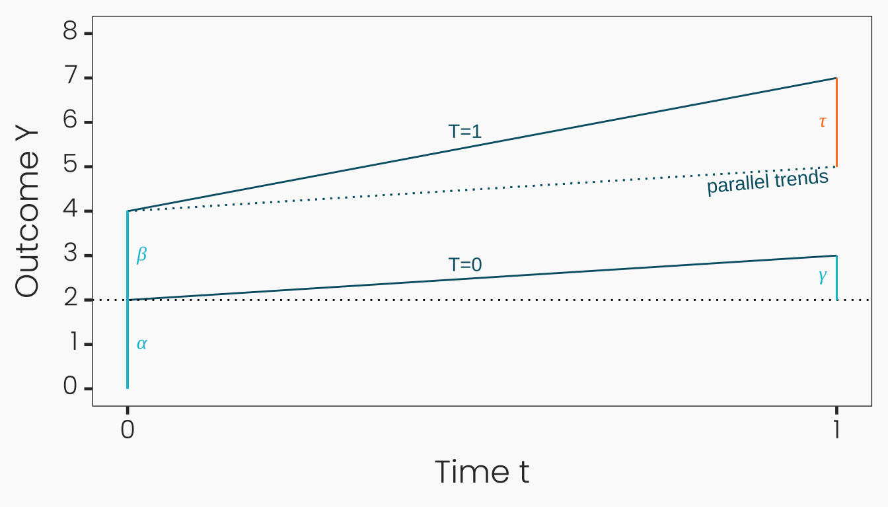

(8) Difference-in-Differences
Causal Data Science for Business Analytics
Hamburg University of Technology
Tuesday, 18. June 2024
Basic Model
Focus: ATT After Treatment
Unconfoundedness assumption \(\{Y(0), Y(1)\} \perp\!\!\!\perp T\) helps to identify the ATE: \(\tau_{\text{ATE}} = \mathbb{E}[Y_i|T_i=1] - \mathbb{E}[Y_i|T_i=0]\).
Average Treatment Effect on the Treated (ATT): \(\tau_{\text{ATT}} = \mathbb{E}[Y_i(1) - Y_i(0) | T_i=1]\)- Weaker identification assumption suffices: \(Y(0) \perp\!\!\!\perp T|X\):
\[ \begin{align*} \tau_{\text{ATT}} = \mathbb{E}[Y_i(1) - Y_i(0) | T_i=1] &= \mathbb{E}[Y_i(1) | T_i=1] - \mathbb{E}[Y_i(0) | T_i=1] \\ &= \mathbb{E}[Y_i | T_i=1] - \mathbb{E}[Y_i(0) | T_i=1] \\ &= \mathbb{E}[Y_i | T_i=1] - \mathbb{E}[Y_i(0) | T_i=0] \\ &= \mathbb{E}[Y_i | T_i=1] - \mathbb{E}[Y_i | T_i=0] \end{align*} \]
- Introducing time periods
beforeandaftertreatment \(t=0,1\):- \(\tau_{\text{DiD}} = \mathbb{E}[Y_{i,t=1}(1) - Y_{i,t=1}(0) | T_i=1]\)
Assumptions and Definition
- In addition to
SUTVA(consistency & no interference), two new assumptions:
Assumption (A.pt) “Parallel Trends”
\(\mathbb{E}[Y_{i,t=1}(0) - Y_{i,t=0}(0) | T_i=1] = \mathbb{E}[Y_{i,t=1}(0) - Y_{i,t=0}(0) | T_i=0]\).
- Equivalent to
unconfoundedness of the change(rather than potential outcomes themselves): \((Y_1(0)-Y_0(0)) \perp\!\!\!\perp T\).
Assumption (A.na) “No Anticipation”
\(\mathbb{E}[Y_{i,t=0}(1) - Y_{i,t=0}(0) | T_i=1] = 0 \quad\) or \(\quad Y_{i,t=0}(1) = Y_{i,t=0}(0)\)
- Treatment has no effect on the treatment group before it is administered.
Definition “Difference-in-Differences ATT”
- Given consistency, parallel trends, and no anticipation, the ATT is given by the difference between change in the treated group and change in the control group:
\(\tau_{\text{DiD}} = \mathbb{E}[Y_{i,t=1}(1) - Y_{i,t=1}(0) | T_i=1] = (\mathbb{E}[Y_{i,t=1} | T_i=1] - \mathbb{E}[Y_{i,t=0} | T_i=1]) - (\mathbb{E}[Y_{i,t=1} | T_i=0] - \mathbb{E}[Y_{i,t=0} | T_i=0])\).
Identification
- Proof:
\[ \begin{aligned} \tau_{\text{DiD}} = \mathbb{E}[Y_{i,1}(1) - Y_{i,1}(0) | T_i=1] &\overset{\text{LIE}}{=} \mathbb{E}[Y_{i,1}(1) | T_i=1] - \mathbb{E}[Y_{i,1}(0) | T_i=1] \\ &= \mathbb{E}[Y_{i,1}(1) | T_i=1] {\color{#00C1D4}- \mathbb{E}[Y_{i,0}(0) | T_i=1]} - \mathbb{E}[Y_{i,1}(0) | T_i=1] {\color{#00C1D4}+ \mathbb{E}[Y_{i,0}(0) | T_i=1]} \\ & \overset{\text{(A.na)}}{=} \mathbb{E}[Y_{i,1}(1) | T_i=1] -\mathbb{E}[Y_{i,0}({\color{#00C1D4}1}) | T_i=1] - \mathbb{E}[Y_{i,1}(0) | T_i=1] + \mathbb{E}[Y_{i,0}(0) | T_i= 1] \\ & \overset{\text{(SUTVA)}}{=} {\color{#00C1D4}\mathbb{E}[Y_{i,1} | T_i=1]} - {\color{#00C1D4}\mathbb{E}[Y_{i,0} | T_i=1]} - {\color{#FF7E15}(\mathbb{E}[Y_{i,1}(0) - Y_{i,0}(0) | T_i= 1])} \\ & \overset{\text{(A.pt)}}{=} \mathbb{E}[Y_{i,1} | T_i=1] - \mathbb{E}[Y_{i,0} | T_i=1] - {\color{#00C1D4}(\mathbb{E}[Y_{i,1}(0) - Y_{i,0}(0) | T_i= 0])} \\ &\overset{\text{LIE}}{=} \mathbb{E}[Y_{i,1} | T_i=1] - \mathbb{E}[Y_{i,0} | T_i=1] - (\mathbb{E}[Y_{i,1}(0) | T_i=0] - \mathbb{E}[Y_{i,0}(0) | T_i=0]) \\ &\overset{\text{SUTVA}}{=} \underbrace{\mathbb{E}[Y_{i,1} | T_i=1] - \mathbb{E}[Y_{i,0} | T_i=1]}_{\text{change in the treated group}} - \underbrace{(\mathbb{E}[Y_{i,1} | T_i=0] - \mathbb{E}[Y_{i,0} | T_i=0])}_{\text{change in the control group}} \\ \end{aligned} \]
How DiD Estimation Works

Diff-in-Diffs Regression
- DiD estimator \(\tau_{\text{DiD}}\) can be obtained by
two types of regressions:
Two-way fixed effects (TWFE) regression:- \(Y_{i,t} = \alpha_i + \gamma_t + \tau_{\text{DiD}} (T_i \times t) + \epsilon_{i,t}\)
- Individual fixed effects \(\alpha_i\): capture time-invariant characteristics of individuals.
- Time fixed effects \(\gamma_t\): capture time-specific effects common to all individuals.
- Interaction between the treatment \(T_i\) and a time dummy \(t\): \(T_i \times t\).
- Works for
panel data: i.e. same observations before and after treatment.
- Regressing \(Y_i\) on the treatment \(T_i\), a time dummy \(t\) and their interaction \(T_i \times t\):
- \(Y_{i,t} = \alpha + \beta T_i + \gamma t + \tau_{\text{DiD}} (T_i \times t) + \epsilon_{i,t}\)
- Works for both panel data
and repeated cross-sectionional data: i.e. different observations before and after treatment.
Diff-in-Diffs Regression
Graphical interpretationof \(Y_{i,t} = \alpha + \beta T_i + \gamma t + \tau_{\text{DiD}} (T_i \times t) + \epsilon_{i,t}\):- \(\alpha = \mathbb{E}[Y_{i,0} | T_i=0]\) is the mean outcome of the nontreated at \(t=0\).
- \(\beta = \mathbb{E}[Y_{i,0} | T_i=1] - \mathbb{E}[Y_{i,0} | T_i=0]\) is the mean difference in outcomes across treatment groups at \(t=0\).
- This
selection biasshould remain constant in \(t=1\).
- This
- \(\gamma = \mathbb{E}[Y_{i,1} | T_i=0] - \mathbb{E}[Y_{i,0} | T_i=0]\) is the time trend in mean outcomes among the non-treated.
- This trend should be the
same (parallel) for the treated group.
- This trend should be the

- Alternative interpretation: \[ \begin{aligned} \tau_{\text{DiD}} = \underbrace{\mathbb{E}[Y_{i,1} | T_i=1] - \mathbb{E}[Y_{i,1} | T_i=0]}_{\text{difference in post-treatment}} \\ - \underbrace{(\mathbb{E}[Y_{i,0} | T_i=1] - \mathbb{E}[Y_{i,0} | T_i=0])}_{\text{difference in pre-treatment}} \end{aligned} \]
Basic DiD: Example
Repeated cross-sectional data: Assess house prices before and after a new highway is built. Repeated cross-section data of 179 houses in 1978 and 142 houses in 1981 in Kiel, Germany. Not the same houses over time.
library(wooldridge) # load wooldridge package for data
library(fixest) # load fixest package for FE regression
data(kielmc) # load kielmc data
attach(kielmc) # attach data
kielmc$Y = kielmc$rprice # define outcome
kielmc$T = kielmc$nearinc # define treatment group
kielmc$t = kielmc$y81 # define period dummy
feols(Y ~ T + t + T:t, # eqivalent to lm(Y ~ T*t)
data = kielmc,
vcov = vcov_cluster("cbd") # cluster st.error w.r.t. distance to center
)OLS estimation, Dep. Var.: Y
Observations: 321
Standard-errors: Clustered (cbd)
Estimate Std. Error t value Pr(>|t|)
(Intercept) 82517.2 3221.92 25.61117 < 2.2e-16 ***
T -18824.4 7796.29 -2.41453 0.02146099 *
t 18790.3 5154.86 3.64516 0.00090981 ***
T:t -11863.9 6621.82 -1.79164 0.08236582 .
---
Signif. codes: 0 '***' 0.001 '**' 0.01 '*' 0.05 '.' 0.1 ' ' 1
RMSE: 30,053.9 Adj. R2: 0.166131Basic DiD: Example 2
Panel data: Assess the impact of participating in the U.S. National Supported Work (NSW) training program targeted to individuals with social and economic problems on their real earnings. Experimental vs. non-experimental control group.
library(tidyverse)
library(fixest)
library(haven) # to read Stata files
# 1. Experimental data
data <- haven::read_dta("https://raw.github.com/Mixtape-Sessions/Causal-Inference-2/master/Lab/Lalonde/lalonde_exp_panel.dta")
# ---- Difference-in-means - Averages
with(data, {y11 = mean(re[year == 78 & ever_treated == 1])
y01 = mean(re[year == 78 & ever_treated == 0])
dim = y11 - y01
dim})[1] 1794.342# 2. Non-Experimental data
data <- haven::read_dta("https://raw.github.com/Mixtape-Sessions/Causal-Inference-2/master/Lab/Lalonde/lalonde_nonexp_panel.dta")
# ---- Difference-in-means - Averages
with(data, {y11 = mean(re[year == 78 & ever_treated == 1])
y01 = mean(re[year == 78 & ever_treated == 0])
dim = y11 - y01
dim})[1] -8497.516# ---- Difference-in-Differences - Averages
with(data, {y00 = mean(re[year == 75 & ever_treated == 0])
y01 = mean(re[year == 78 & ever_treated == 0])
y10 = mean(re[year == 75 & ever_treated == 1])
y11 = mean(re[year == 78 & ever_treated == 1])
did = (y11 - y10) - (y01 - y00)
did})[1] 3621.232data$post_treat = data$ever_treated * (data$year == 78)
# ---- Difference-in-Differences - Two-Way Fixed Effects Regression
feols(re ~ post_treat | id + year,
data = data |> filter(year %in% c(75, 78)),
vcov = vcov_cluster(c("id", "year")))
# ---- Difference-in-Differences - Interactive Regression
feols(re ~ ever_treated + I(year == 78) + post_treat,
data = data |> filter(year %in% c(75, 78)),
vcov = vcov_cluster(c("id", "year")))OLS estimation, Dep. Var.: re
Observations: 32,354
Fixed-effects: id: 16,177, year: 2
Standard-errors: Clustered (id & year)
Estimate Std. Error t value Pr(>|t|)
post_treat 3621.23 609.84 5.93801 0.10621
---
Signif. codes: 0 '***' 0.001 '**' 0.01 '*' 0.05 '.' 0.1 ' ' 1
RMSE: 3,859.0 Adj. R2: 0.670904
Within R2: 0.002483OLS estimation, Dep. Var.: re
Observations: 32,354
Standard-errors: Clustered (id & year)
Estimate Std. Error t value Pr(>|t|)
(Intercept) 13650.80 51.4092 265.5324 0.0023975 **
ever_treated -12118.75 99.1118 -122.2736 0.0052064 **
I(year == 78) 1195.86 21.2944 56.1583 0.0113350 *
post_treat 3621.23 41.0534 88.2078 0.0072170 **
---
Signif. codes: 0 '***' 0.001 '**' 0.01 '*' 0.05 '.' 0.1 ' ' 1
RMSE: 9,428.0 Adj. R2: 0.017819Parallel Trends Conditional on Covariates
Parallel Trends Violations
Functional form misspecification:- Sensitive to (even monotonic) transformations of the outcome (e.g. logarithm) unless the treatment is randomly assigned (Roth and Sant’Anna, 2021).
Compositional change with repeated cross-sections:- Sample composition may have changed between the pre and post period in ways that are correlated with treatment (Sant’Anna and Xu, 2023).
Time-varying Confounding:- Confounding in diff-in-diffs: covariate with time-varying effect on the outcome or a time-varying difference between groups.
- Time-invariant confounding: covariate differences between groups that are invariant over time, or covariate changes that are invariant across groups - cancel out due to differencing.
- Cross-sectional confounding in comparison: covariate associated with treatment & outcome.
Types of Confounding Covariates
Time-invariant covariate: \(X_{i}\)- Does not change over time for an individual.
- Confounder if the means of the covariate are different in the two groups and it has a time-varying effect on the outcome.
Time-varying covariate: \(X_{i,t}\)- Does change over time for an individual.
- Confounder if the covariate means evolve differently between the two groups or the covariate means start at different levels and evolve in parallel, and the covariate has a time-varying effect on the outcome.
Handling of Confounding Covariates
- Most estimation approaches treat all covariates as time-invariant:
- Time-varying covariates are fixed at their pre-treatment value across all periods.
Advantages: avoids time-varying confounders affected by treatment (mediators are “bad controls”) and helps to reduce the dimensionality of the problem.Disadvantage: no control for time trends in X independently of the treatment and thus PT violation remains.
Newer estimation approachescan handle time-varying covariates in more flexible ways (e.g. Caetano and Callaway, 2023):- All covariates values from each period in each period (highest dimensionality).
- Covariates values from the current period and base period.
- Changes in covariate values from period to period.
- Average covariate values across time periods.
Conditional Parallel Trends
- Parallel trend assumption often appear plausible only after controlling for observed covariates \(\mathbf{X_i}\):
Assumption (A.cpt) “Conditional Parallel Trends”
\(\mathbb{E}[Y_{i,t=1}(0) - Y_{i,t=0}(0) | T_i=1, \mathbf{X_i}] = \mathbb{E}[Y_{i,t=1}(0) - Y_{i,t=0}(0) | T_i=0, \mathbf{X_i}] \quad\) and
\(\mathbf{X_i}\) is not affected by \(T_i\): \(\quad \mathbf{X_i}(1) = \mathbf{X_i}(0) = \mathbf{X_i}\)
Conditional unconfoundedness of the change(rather than potential outcomes themselves): \((Y_1(0)-Y_0(0)) \perp\!\!\!\perp T \mid \mathbf{X_i}\).
Assumption (A.cna) “Conditionally No Anticipation”
\(\mathbb{E}[Y_{i,t=0}(1) - Y_{i,t=0}(0) | T_i=1, \mathbf{X_i}] = 0\)
- Treatment has no effect on the treatment group before it is administered within the same strata of \(\mathbf{X_i}\).
Assumption (A.pos) “Positivity / Common Support / Overlap”
\(\Pr(T_i = 1 \mid \mathbf{X_i}) < 1 \space \text{and} \space \Pr(T_i = 1) > 0\).
- For each treated unit with covariates \(\mathbf{X_i}\), there are at least some untreated units in the population with the same \(\mathbf{X_i}\).
ATT Conditional on Covariates: Identification
- Given the conditional parallel trends assumption, no anticipation assumption, and overlap condition, the ATT conditional on \(\mathbf{X_i = x}\), \(\tau_{\text{DiD}}(\mathbf{x})\), can be identified for all \(\mathbf{x}\) with \(\Pr(T_i = 1 \mid \mathbf{X_i = x}) > 0\) as:
\[ \begin{aligned} \tau_{\text{DiD}}(\mathbf{x}) &= \mathbb{E}[Y_{i,1}(1) - Y_{i,1}(0) | T_i=1, \mathbf{X_i = x}] \\ &\overset{\text{LIE}}{=} \mathbb{E}[Y_{i,1}(1) | T_i=1, \mathbf{x}] - \mathbb{E}[Y_{i,1}(0) | T_i=1, \mathbf{x}] \\ &= \mathbb{E}[Y_{i,1}(1) | T_i=1, \mathbf{x}] {\color{#00C1D4}- \mathbb{E}[Y_{i,0}(0) | T_i=1, \mathbf{x}]} - \mathbb{E}[Y_{i,1}(0) | T_i=1, \mathbf{x}] {\color{#00C1D4}+ \mathbb{E}[Y_{i,0}(0) | T_i=1, \mathbf{x}]} \\ & \overset{\text{(A.cna)}}{=} \mathbb{E}[Y_{i,1}(1) | T_i=1, \mathbf{x}] -\mathbb{E}[Y_{i,0}({\color{#00C1D4}1}) | T_i=1, \mathbf{x}] - \mathbb{E}[Y_{i,1}(0) | T_i=1, \mathbf{x}] + \mathbb{E}[Y_{i,0}(0) | T_i= 1, \mathbf{x}] \\ & \overset{\text{(SUTVA)}}{=} {\color{#00C1D4}\mathbb{E}[Y_{i,1} | T_i=1, \mathbf{x}]} - {\color{#00C1D4}\mathbb{E}[Y_{i,0} | T_i=1, \mathbf{x}]} - {\color{#FF7E15}(\mathbb{E}[Y_{i,1}(0) - Y_{i,0}(0) | T_i= 1, \mathbf{x}])} \\ & \overset{\text{(A.cpt)}}{=} \mathbb{E}[Y_{i,1} | T_i=1, \mathbf{x}] - \mathbb{E}[Y_{i,0} | T_i=1, \mathbf{x}] - {\color{#00C1D4}(\mathbb{E}[Y_{i,1}(0) - Y_{i,0}(0) | T_i= 0, \mathbf{x}])} \\ &\overset{\text{LIE}}{=} \mathbb{E}[Y_{i,1} | T_i=1, \mathbf{x}] - \mathbb{E}[Y_{i,0} | T_i=1, \mathbf{x}] - (\mathbb{E}[Y_{i,1}(0) | T_i=0, \mathbf{x}] - \mathbb{E}[Y_{i,0}(0) | T_i=0, \mathbf{x}]) \\ &\overset{\text{SUTVA}}{=} \underbrace{\mathbb{E}[Y_{i,1} | T_i=1, \mathbf{x}] - \mathbb{E}[Y_{i,0} | T_i=1, \mathbf{x}]}_{\text{change for T=1 and X=x}} - \underbrace{(\mathbb{E}[Y_{i,1} | T_i=0, \mathbf{x}] - \mathbb{E}[Y_{i,0} | T_i=0, \mathbf{x}])}_{\text{change for T=0 and X=x}} \\ \end{aligned} \]
ATT Conditional on Covariates: Estimation
- The unconditional ATT can then be identified by averaging \(\tau_{\text{DiD}}(\mathbf{x})\) over the distribution of \(X_i\) in the treated population.
- Using the law of iterated expectations, we have:
\(\tau_{\text{DiD}} = \mathbb{E}[Y_{i,1}(1) - Y_{i,1}(0) | T_i=1] = \mathbb{E}_{\mathbf{X_i}}\left[ \underbrace{\mathbb{E}[Y_{i,1}(1) - Y_{i,1}(0) | T_i=1, \mathbf{X_i}]}_{\tau_{\text{DiD}}(\mathbf{X_i})} \mid T_i=1\right]\)
Four estimation procedures:- Two-Way Fixed Effects (TWFE) Regression
- Outcome Regression Adjustment
- Inverse Probability Weighting (IPW)
- Doubly Robust Estimation
Two-Way Fixed Effects (TWFE) Regression
- Augment TWFE specification with covariates (e.g. Zeldow and Hatfield, 2021):
- Time-invariant covariate with time-variant effect on outcome:
- \(Y_{i,t} = \alpha_i + \gamma_t + \tau_{\text{DiD}} (T_i \times t) + \delta (X_i \times t) + \epsilon_{i,t}\)
- Time-variant covariate with time-invariant effect on outcome:
- \(Y_{i,t} = \alpha_i + \gamma_t + \tau_{\text{DiD}} (T_i \times t) + \delta X_{it} + \epsilon_{i,t}\)
- Time-variant covariate with time-variant effect on outcome:
- \(Y_{i,t} = \alpha_i + \gamma_t + \tau_{\text{DiD}} (T_i \times t) + \delta (X_{it} \times t) + \epsilon_{i,t}\)
- Time-invariant covariate with time-variant effect on outcome:
- Rather strong
additional assumptionsneeded (e.g. Caetano and Callaway, 2023):- Treatment effect is homogeneous across different values of X.
- Outcome is linear in X.
- Only controlling for covariate changes, not for levels.
TWFE Regression: Example
library(tidyverse)
library(fixest)
library(haven) # to read Stata files
data <- haven::read_dta("https://raw.github.com/Mixtape-Sessions/Causal-Inference-2/master/Lab/Lalonde/lalonde_nonexp_panel.dta")
data$post_treat = data$ever_treated * (data$year == 78)
data$post = as.integer(data$year == 78)
# ---- Difference-in-Differences - Two-Way Fixed Effects Regression
feols(
re ~ post_treat + age:post + agesq:post + agecube:post + educ:post + educsq:post + marr:post + nodegree:post + black:post + hisp:post | id + year,
data = data |> filter(year %in% c(75, 78)),
vcov = vcov_cluster(c("id", "year"))
)OLS estimation, Dep. Var.: re
Observations: 32,354
Fixed-effects: id: 16,177, year: 2
Standard-errors: Clustered (id & year)
Estimate Std. Error t value Pr(>|t|)
post_treat 2450.964333 645.332739 3.797985 0.163900
age:post -1392.968721 188.627206 -7.384771 0.085686 .
post:agesq 32.005450 5.576397 5.739450 0.109818
post:agecube -0.254779 0.052340 -4.867790 0.128988
post:educ -132.810162 95.337273 -1.393056 0.396361
post:educsq 10.228897 3.957951 2.584392 0.235037
post:marr -578.337803 163.583509 -3.535429 0.175485
post:nodegree 417.398327 193.694598 2.154930 0.276597
post:black -281.607046 205.559277 -1.369955 0.401418
post:hisp -126.167682 234.813629 -0.537310 0.686116
---
Signif. codes: 0 '***' 0.001 '**' 0.01 '*' 0.05 '.' 0.1 ' ' 1
RMSE: 3,737.9 Adj. R2: 0.691052
Within R2: 0.064074Outcome Regression Adjustment
Regression Adjustmentexploits the fact that under conditional parallel trends, strong overlap, and no anticipation the ATT can be written as (Heckman, Ichimura and Todd, 1997):
\[ \begin{aligned} \tau_{\text{DiD}} &= \mathbb{E}_{\mathbf{X_i}}\left[\space \underbrace{\mathbb{E}[Y_{i,1} - Y_{i,0} | T_i=1, \mathbf{X_i}] - \mathbb{E}[Y_{i,1} - Y_{i,0} | T_i=0, \mathbf{X_i}]}_{\tau_{\text{DiD}}(\mathbf{X_i})} \mid T_i=1\right] \\ &\overset{\text{LIE}}{=} \mathbb{E}[Y_{i,1} - Y_{i,0} | T_i=1] - \mathbb{E}_{\mathbf{X_i}}\left[\space \mathbb{E}[Y_{i,1} - Y_{i,0} | T_i=0, \mathbf{X_i}] \mid T_i=1\right]\\ &\overset{\text{LIE}}{=} \mathbb{E}[Y_{i,1} - Y_{i,0} | T_i=1] - \mathbb{E}_{\mathbf{X_i}}\left[\space \mathbb{E}[Y_{i,1} | T_i=0, \mathbf{X_i}] - \mathbb{E}[Y_{i,0} | T_i=0, \mathbf{X_i}] \mid T_i=1\right] \\ &:= \mathbb{E}[Y_{i,1} - Y_{i,0} | T_i=1] - \mathbb{E}_{\mathbf{X_i}}\left[\space \mu_{1}(0, \mathbf{X_i}) - \mu_{0}(0, \mathbf{X_i}) \mid T_i=1\right] \end{aligned} \]
Potential outcome evolution for the treatment group is imputed with a regression based only on X of the control group.
Sample version: \(\hat{\tau}_{\text{DiD}} =\frac{1}{N_1} \underset{i:T_i=1}{\sum} (( Y_{i,1} - Y_{i,0}) - (\hat{\mu}_{1}(0, \mathbf{X_i}) - \hat{\mu}_{0}(0, \mathbf{X_i})))\)
- Estimate the conditional expectation of the outcome at time \(t\), \(\hat{\mu}_{t}(T_i = 0, \mathbf{X_i})\) among untreated units.
- Create prediction for each treated unit using the covarite values \(X_i\) among the treated units.
- Calculate difference between observed and predicted difference for each treated unit and average.
Outcome Regression Adjustment: Example
library(tidyverse)
library(DRDID)
library(haven) # to read Stata files
data <- haven::read_dta("https://raw.github.com/Mixtape-Sessions/Causal-Inference-2/master/Lab/Lalonde/lalonde_nonexp_panel.dta")
# ---- Difference-in-Differences - Double-robust
ordid(
yname = "re", tname = "year", idname = "id", dname = "ever_treated",
xformla = ~ age + agesq + agecube + educ + educsq + marr + nodegree + black + hisp + re74 + u74,
data = data |> filter(year == 75 | year == 78)
) Call:
ordid(yname = "re", tname = "year", idname = "id", dname = "ever_treated",
xformla = ~age + agesq + agecube + educ + educsq + marr +
nodegree + black + hisp + re74 + u74, data = filter(data,
year == 75 | year == 78))
------------------------------------------------------------------
Outcome-Regression DID estimator for the ATT:
ATT Std. Error t value Pr(>|t|) [95% Conf. Interval]
1769.9984 643.0996 2.7523 0.0059 509.5233 3030.4736
------------------------------------------------------------------
Estimator based on panel data.
Outcome regression est. method: OLS.
Analytical standard error.
------------------------------------------------------------------
See Sant'Anna and Zhao (2020) for details.Outcome Regression with ML: Example
library(tidyverse)
library(mlr3)
library(mlr3learners)
library(haven) # to read Stata files
data <- haven::read_dta("https://raw.github.com/Mixtape-Sessions/Causal-Inference-2/master/Lab/Lalonde/lalonde_nonexp_panel.dta")
data <- data |> filter(year == 75 | year == 78) |>
select(-treat, -data_id) |>
pivot_wider(names_from = year, values_from = re, names_prefix = "re_") |>
mutate(re_diff = re_78 - re_75)
data_pred <- data |> select(re_diff, ever_treated, age, agesq, agecube, educ, educsq,
marr, nodegree, black, hisp, re74, u74)
# Define prediction model for the outcome difference delta_mu
task_mu <- as_task_regr(data_pred |> select(-ever_treated), target = "re_diff")
lrnr_mu <- lrn("regr.ranger", predict_type = "response")
# learn outcome difference delta_mu among untreated
lrnr_mu$train(task_mu, row_ids = which(data$ever_treated == 0))
# predict outcome difference delta_mu among treated
delta_mu <- lrnr_mu$predict(task_mu, row_ids = which(data$ever_treated == 1))$response
mu1 <- data$re_78[data$ever_treated == 1]
mu2 <- data$re_75[data$ever_treated == 1]
mean( (mu1 - mu2) - delta_mu )[1] 2215.785Inverse Probability Weighting (IPW)
The IPW approach proposed by Abadie (2005):
- \(\tau_{\text{DiD}} = \mathbb{E}\left( \frac{ Y_{i,1} - Y_{i,0}}{P(T_i=1)} \frac{T_i - e(\mathbf{X_i})}{1-e(\mathbf{X_i})} \right)\)
- \(e(\mathbf{X_i}) = P[T_i = 1 | \mathbf{X_i}]\)
Sample version:
- \(\hat{\tau}_{\text{DiD}} = \frac{1}{N} \underset{i}{\sum} \left( \frac{ Y_{i,1} - Y_{i,0}}{P(T_i=1)} \frac{T_i - \hat{e}(\mathbf{X_i})}{1-\hat{e}(\mathbf{X_i})} \right)\)
Intuition: what happens when \(T_i=1\) and \(T_i=0\)?- Weighting with the propensity only happens to the control group’s first differences – not the treatment groups!
- Why? Because it’s the \(Y_1(0)\) that is missing, not the \(Y_1(1)\).
IWP: Example
library(tidyverse)
library(DRDID)
library(haven) # to read Stata files
data <- haven::read_dta("https://raw.github.com/Mixtape-Sessions/Causal-Inference-2/master/Lab/Lalonde/lalonde_nonexp_panel.dta")
# ---- Difference-in-Differences - Double-robust
ipwdid(
yname = "re", tname = "year", idname = "id", dname = "ever_treated",
xformla = ~ age + agesq + agecube + educ + educsq + marr + nodegree + black + hisp + re74 + u74,
data = data |> filter(year == 75 | year == 78)
) Call:
ipwdid(yname = "re", tname = "year", idname = "id", dname = "ever_treated",
xformla = ~age + agesq + agecube + educ + educsq + marr +
nodegree + black + hisp + re74 + u74, data = filter(data,
year == 75 | year == 78))
------------------------------------------------------------------
IPW DID estimator for the ATT:
ATT Std. Error t value Pr(>|t|) [95% Conf. Interval]
2048.1972 724.1233 2.8285 0.0047 628.9156 3467.4788
------------------------------------------------------------------
Estimator based on panel data.
Hajek-type IPW estimator (weights sum up to 1).
Propensity score est. method: maximum likelihood.
Analytical standard error.
------------------------------------------------------------------
See Sant'Anna and Zhao (2020) for details.IWP with ML: Example
library(tidyverse)
library(mlr3)
library(mlr3learners)
library(haven) # to read Stata files
data <- haven::read_dta("https://raw.github.com/Mixtape-Sessions/Causal-Inference-2/master/Lab/Lalonde/lalonde_nonexp_panel.dta")
data <- data |> filter(year == 75 | year == 78) |>
select(-treat, -data_id) |>
pivot_wider(names_from = year, values_from = re, names_prefix = "re_")
data_pred <- data |> select(re_78, re_75, ever_treated, age, agesq, agecube, educ, educsq,
marr, nodegree, black, hisp, re74, u74)
# Define prediction model for the propensity score e
task_e <- as_task_classif(data_pred |> select(-re_78, -re_75), target = "ever_treated")
lrnr_e <- lrn("classif.ranger", predict_type = "prob")
# Learn propensity score e among all observations
lrnr_e$train(task_e)
# Predict propensity score ehat
ehat <- lrnr_e$predict(task_e)$prob[, 2]
# Calculate the ATT
T <- data$ever_treated
P <- mean(data$ever_treated)
Y1 <- data$re_78
Y0 <- data$re_75
mean( (Y1-Y0)/P * (T - ehat)/(1-ehat) ) [1] 2923.241Doubly Robust Estimation
- Outcome regression and IPW approaches can also be combined in the context of Diff-in-Diffs to form “doubly-robust” (DR) methods that are valid if either the outcome model or the propensity score model is correctly specified (Sant’Anna and Zhao, 2020):
- \(\tau_{\text{DiD}} = \mathbb{E}\left( (Y_{i,1} - Y_{i,0} - (\mu_{1}(0, \mathbf{X_i}) - \mu_{0}(0, \mathbf{X_i}))) \left(\frac{T_i - e(\mathbf{X_i})}{P(T_i)(1-e(\mathbf{X_i}))}\right) \right)\)
- Sample version:
- \(\hat{\tau}_{\text{DiD}} = \frac{1}{N} \underset{i}{\sum} \left( (Y_{i,1} - Y_{i,0} - (\hat{\mu}_{1}(0, \mathbf{X_i}) - \hat{\mu}_{0}(0, \mathbf{X_i}))) \left(\frac{T_i - \hat{e}(\mathbf{X_i})}{P(T_i)(1-\hat{e}(\mathbf{X_i}))}\right) \right)\)
- Double machine learning for difference-in-differences models (Chang, 2020).
Doubly Robust Estimation: Example
library(tidyverse)
library(DRDID)
library(haven) # to read Stata files
data <- haven::read_dta("https://raw.github.com/Mixtape-Sessions/Causal-Inference-2/master/Lab/Lalonde/lalonde_nonexp_panel.dta")
# ---- Difference-in-Differences - Double-robust
drdid(
yname = "re", tname = "year", idname = "id", dname = "ever_treated",
xformla = ~ age + agesq + agecube + educ + educsq + marr + nodegree + black + hisp + re74 + u74,
data = data |> filter(year == 75 | year == 78)
) Call:
drdid(yname = "re", tname = "year", idname = "id", dname = "ever_treated",
xformla = ~age + agesq + agecube + educ + educsq + marr +
nodegree + black + hisp + re74 + u74, data = filter(data,
year == 75 | year == 78))
------------------------------------------------------------------
Further improved locally efficient DR DID estimator for the ATT:
ATT Std. Error t value Pr(>|t|) [95% Conf. Interval]
2032.9217 707.4779 2.8735 0.0041 646.265 3419.5784
------------------------------------------------------------------
Estimator based on panel data.
Outcome regression est. method: weighted least squares.
Propensity score est. method: inverse prob. tilting.
Analytical standard error.
------------------------------------------------------------------
See Sant'Anna and Zhao (2020) for details.Doubly Robust Estimation with ML: Example
library(tidyverse)
library(mlr3)
library(mlr3learners)
library(haven) # to read Stata files
data <- haven::read_dta("https://raw.github.com/Mixtape-Sessions/Causal-Inference-2/master/Lab/Lalonde/lalonde_nonexp_panel.dta")
data <- data |> filter(year == 75 | year == 78) |>
select(-treat, -data_id) |>
pivot_wider(names_from = year, values_from = re, names_prefix = "re_") |>
mutate(re_diff = re_78 - re_75)
data_pred <- data |> select(re_diff, ever_treated, age, agesq, agecube, educ, educsq,
marr, nodegree, black, hisp, re74, u74)
# Define prediction model for the propensity score e
task_e <- as_task_classif(data_pred |> select(-re_diff), target = "ever_treated")
lrnr_e <- lrn("classif.ranger", predict_type = "prob")
# Learn propensity score e among all observations
lrnr_e$train(task_e)
# Predict propensity score ehat
ehat <- lrnr_e$predict(task_e)$prob[, 2]
# Define prediction model for the outcome difference delta_mu
task_mu <- as_task_regr(data_pred |> select(-ever_treated), target = "re_diff")
lrnr_mu <- lrn("regr.ranger", predict_type = "response")
# learn outcome difference delta_mu among untreated
lrnr_mu$train(task_mu, row_ids = which(data$ever_treated == 0))
# predict outcome difference delta_mu among all observations
delta_mu <- lrnr_mu$predict(task_mu)$response
# Calculate the ATT
T <- data$ever_treated
P <- mean(data$ever_treated)
Y1 <- data$re_78
Y0 <- data$re_75
mean( ((Y1-Y0) - delta_mu) * (T - ehat)/(P*(1-ehat)) )[1] 2326.225Testing for Parallel Trends
- Next week!
Staggered Adoption
Staggered Adoption
- Next week!
| Thank you for your attention! | |

|
|
Causal Data Science: (8) Difference-in-Differences